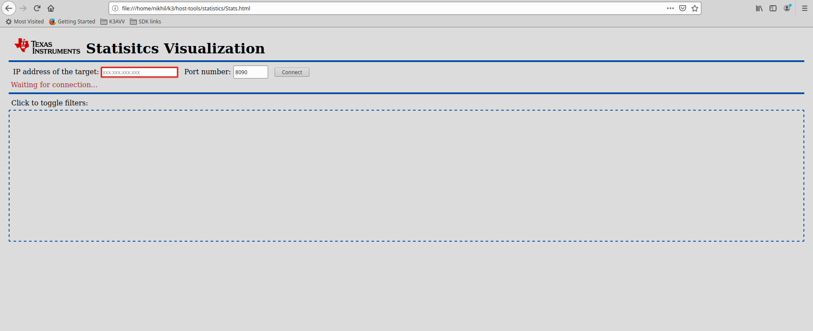
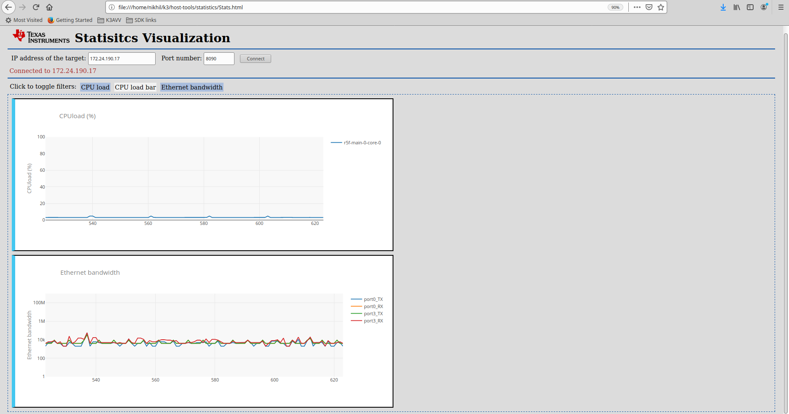

4.1.9. How to visualize statistics data¶
4.1.9.1. Overview¶
In a multicore SoC, there are different software components running on different CPU cores. Each of them will have statistical parameters that are useful when running demos, debugging issues, measuring performance parameters, etc. For all of this, having a common means for collecting and visualizing the statistics data is helpful. Processor SDK Linux J721e provides host tools to do this job. There are three components involved in this:
4.1.9.2. Statistics collection¶
Note
Currently, the statistics visualization is only supported when either vision_apps or ethernet firmware is running on the auxiliary cores.
On the target, statcol application can be used to collect different statistics parameters.
Currently, the following parameters are supported:
- CPU load from various auxiliary CPU cores in the system
- Read and Write DDR memory bandwidth exercised by current use case
- Networking bandwidth as reported by ethernet firmware (if available)
Simply run the statcol application on the target as following to get the real time statistics printed on the console. An example output is shown below.
#target$ statcol
WS-cpuload: 4 R5F 33 C6x 52 A72 34 GPU 79
WS-ddrbw: 4 Read_avg 1853 Write_avg 1097 Read_peak 4270 Write_peak 3957
WS-ethfw-bw: 4 Port0_RX 899Kbps Port0_TX 272Kbps Port1_RX 474Mbps Port1_TX 23Mbps
WS-cpuload: 4 R5F 37 C6x 52 A72 32 GPU 73
WS-ddrbw: 4 Read_avg 1889 Write_avg 1039 Read_peak 4161 Write_peak 3217
WS-ethfw-bw: 4 Port0_RX 906Kbps Port0_TX 222Kbps Port1_RX 473Mbps Port1_TX 26Mbps
Each line of the output describes a statistics parameter with a WS prefixed tag.
4.1.9.3. Tranport from target to host¶
Once the data is collected, it needs to be sent out for visualization on the host
machine. This is done using Web sockets. websocketd is a simple application used
to route the data from native application over web sockets. More info available at
http://www.websocketd.com/
Please make sure that the EVM is connected with an ethernet cable, and the host
machine can access the EVM using the IP address. You can create a websocket server
and serve with the output of statcol application. To do so, run the following
commands on the target EVM:
ifconfig #Note down the IP address
websocketd --devconsole --port=8090 bash -c 'unbuffer statcol'
4.1.9.4. Browser-based visualization¶
Processor SDK Linux J721e installer has the host tools for statistics visualization under the directory board-support/host-tools/statistics. Open the Stats.html file using a web browser on the host machine. This single HTML page contains the JavaScript for visualization of the statistics data from target. The following is an example of the contents of the Stats.html when opened in the Firefox browser:
Enter the IP address of the EVM in the box, update the port number, if required, and then the press the Connect button. After this, the browser connects to the statcol using web sockets and shows different graphs with statistics data. You can filter out the statistics that you want to view by clicking the toggle filters. The following screenshot shows the expected behavior when running with ethernet firmware:
